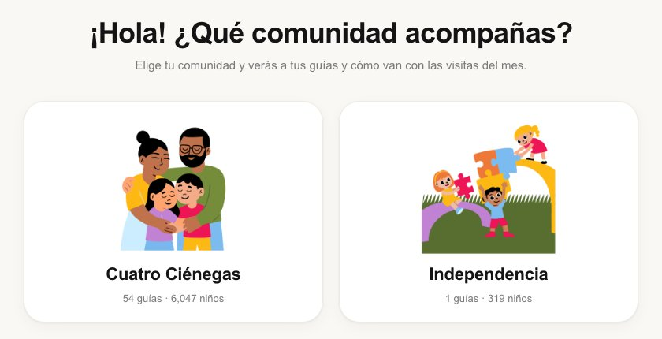
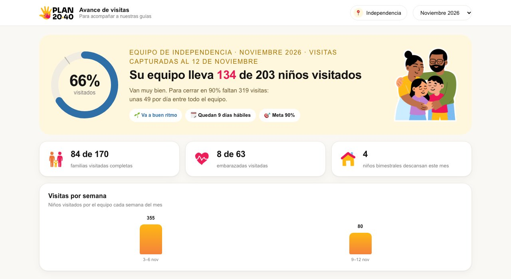
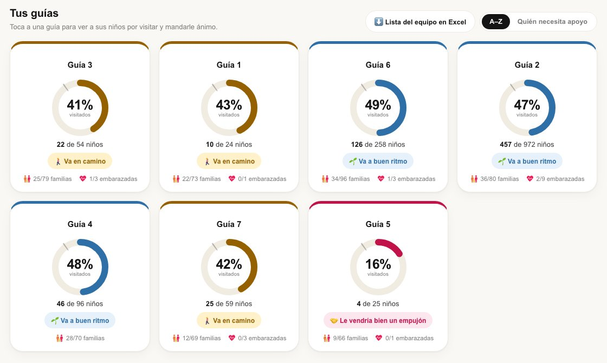

Manual de Avance de Visitas por Guía
Para coordinadoras: cómo va el equipo con las visitas del mes, qué quiere decir la etiqueta de cada guía y cómo usar su detalle.
1¿Para qué sirve?
Es la vista para las coordinadoras de guías: eligen su comunidad y ven cómo va su equipo con las visitas del mes, a cada guía con su avance y, de cada una, la lista de niños, familias y embarazadas que faltan por visitar.
Usa las mismas cifras que el Reporte Mensual, así que lo que ves aquí cuadra con el indicador de Visitas.
2¿De dónde viene la información?
3Cómo moverte en el reporte

- Elige tu comunidad: Cuatro Ciénegas o Independencia. Cada tarjeta dice cuántas guías y niños tiene.
- Arriba a la derecha cambias de mes; con el botón de la comunidad regresas a elegir.
- En Tus guías, toca a una guía para abrir su detalle.
4El avance del equipo

- El anillo y la frase grande: cuántos niños lleva visitados el equipo de cuántos le tocan este mes.
- Debajo, cuántas visitas faltan para cerrar en 90 % y cuántas por día hábil serían entre todo el equipo.
- Las etiquetas: cómo va el ritmo, cuántos días hábiles quedan y la meta (90 %).
- Tres números: familias visitadas completas (todos sus niños P2040 visitados), embarazadas visitadas y niños bimestrales que descansan este mes (no cuentan).
- Visitas por semana: cuántos niños visitó el equipo en cada semana del mes.
5Cómo va cada guía

Cada tarjeta trae el porcentaje de niños visitados, cuántos de cuántos, sus familias y embarazadas visitadas, y una etiqueta con cómo va. En el mes en curso, la etiqueta compara su avance contra el ritmo esperado a la fecha: la meta del 90 % repartida entre los días hábiles del mes.
| Etiqueta | Cuándo aparece |
|---|---|
| 🎉 ¡Meta cumplida! | Ya visitó al 90 % o más de sus niños. |
| 🌱 Va a buen ritmo | Va al ritmo esperado a la fecha, o le faltan menos de 5 puntos. |
| 🚶♀️ Va en camino | Lleva al menos el 70 % de lo esperado a la fecha. |
| 🤝 Le vendría bien un empujón | Va por debajo del 70 % de lo esperado: buen momento para acompañarla. |
- A–Z ordena por nombre; Quién necesita apoyo pone primero a las que van más atrás.
- ⬇️ Lista del equipo en Excel descarga a los niños que faltan por visitar de todo el equipo, guía por guía.
6El detalle de una guía
- Al tocar una guía ves sus niños y familias (visitadas completas, con visita parcial y por visitar) y sus embarazadas.
- Debajo está la lista de quién falta por visitar, para organizar sus próximos días.
- 📲 Copiar mensaje de ánimo para WhatsApp copia un mensaje listo para mandarle, con lo que le falta.
7Preguntas frecuentes
¿Por qué no coincide con el Desempeño de Visitas?
El Desempeño cuenta visitas y usa a todos los niños activos. Este reporte cuenta niños, igual que el Reporte Mensual, y no incluye a los bimestrales que descansan.
¿Por qué una guía con buen porcentaje dice «Va en camino»?
Porque en el mes en curso se compara contra el ritmo esperado a la fecha, no contra la meta final. A mitad de mes, 40 % puede ser buen ritmo; al final del mes ya no.
¿Y en los meses cerrados?
En un mes que ya terminó no hay ritmo que comparar: la etiqueta dice si cumplió la meta o qué tan cerca quedó.